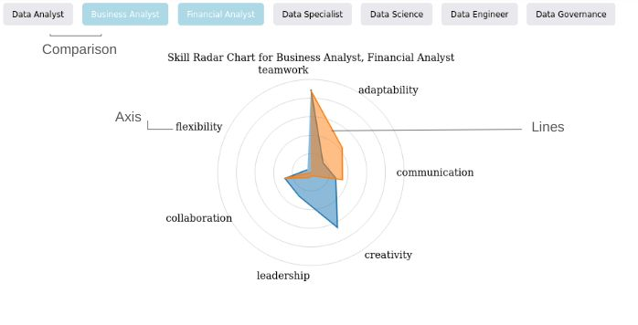
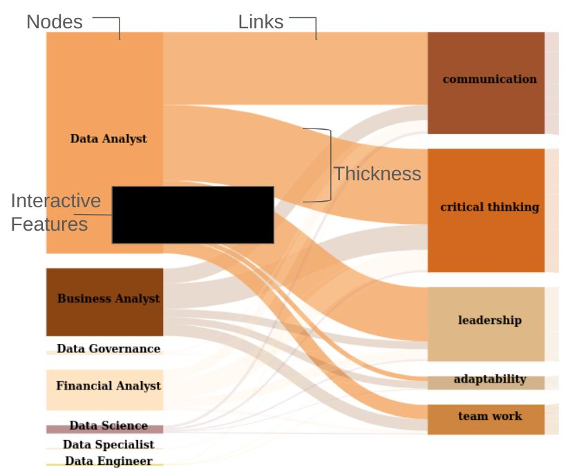

Interpreting EU data job requirements to help you find your ideal
career
The purpose of this bar chart is to help you understand the demand for
popular job categories.
Bar Chart:
Distribution of job quantity in different Data Job Categories.
·
How to Read the radar Diagram
Axes: Each axis represents a different skill. The more extended the axis, the higher the value of that skill..
Lines: The lines connecting the data points form a polygon, showing the distribution of skills across different job roles. A larger, more spread-out polygon indicates a broader range of skills.
Scale: The scale of each axis shows the relative magnitude of skills, ranging from the center (lower value) to the outer edges (higher value).
Comparison: You can compare multiple job roles by visualizing the different radar polygons on the same chart, showing how their skill demands overlap or differ.

A simplified example of a radar chart, showing how to read and
interact with the data between variables like skills and job positions.
The purpose of these buttons is to help you compare and analyze the
similarities and differences in soft skill requirements for various
positions. Finally,help you prioritize improving key soft skills.
Hover over a skill, you can see its related explanation.
We've uncovered the most in-demand jobs and compared their skill requirements—fascinating, right?
But what if we take it a step further? Imagine adding the country factor to the mix and exploring how these three variables interact. Intrigued?
Let’s dive in!
How to Read the Sankey Diagram
Nodes (Rectangles): Represent categories like
countries, soft skills, and job positions.
Links (Paths): Show the relationship between nodes,
with their width indicating the magnitude of the flow.
Direction of Flow: Start reading from the left and
follow the links to see how the flow is distributed.
Thickness: Thicker links mean larger values.
Compare link thicknesses to understand relative importance.
Colors: Represent different categories, making it
easier to follow the flows.
Interactive Features: Hover over any node or link
to view additional information, and click to highlight the flows.

A simplified example of a Sankey chart, showing how to read and
interact with the flow of data between categories like countries,
skills, and job positions.
The purpose of these buttons is to help you select the most important
criteria for your job search:
Green Button:
Use this to set country first and explore job
opportunities in specific locations.
Orange Button:
Choose this to set soft skills first and find roles
that match your existing expertise.